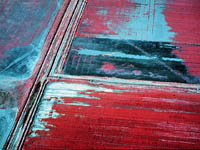

|
|
|
| Soil colour is an important property of soils that reflects many of the soils properties and so is used widely in classifying soils. A change in surface colour from one area to another may reflect a change in the mineral composition or the amount of water present. Notice how the knolls in some fields are lighter in colour compared to the level areas. This could be the result of lower moisture levels in the knoll, but also it may be that the surface soil has been eroded and what we now see is the top of the lighter coloured B horizon or subsoil. Colour also can plant growth through its effect on soil temperature. | |||
 Watch for color changes in surface soils as you drive through the country. Darker soils generally mean more organic matter. Also common in Saskatchewan are the white powdery areas usually around sloughs or around the edges of fields that have been irrigated. This often indicates salt deposits. These soils are often incorrectly called "alkali"rather than "saline" soils. | |||

The colour of soil horizons is an important criterion which enables soil scientists to classify soils. As an obvious example: look for a soil profile that has been cut through an area that is waterlogged or flooded periodically. You will notice light gray horizons. These layers have been "gleyed" or subject to reducing conditions. Red and brown stripes, spots or mottles indicate alternate waterlogged and dry conditions. The spots are composed of oxidized iron compounds (rust). | |||
Munsell Colour Notation How do we measure colour? Scientists use a system called the Munsell Colour Notation. Soils are compared to books of standard colours. Each standard is composed of three distinct categories:
| |||
Soil temperature is greatly affected by colour. Black soils absorb more energy from the sun's radiation than do gray soils. This means that they will warm up quickly in the spring after the snow has melted, allowing the seeds to germinate and seedlings to grow. However, on a hot summer's day, a surface temperature of a dry black soil could exceed 50 degrees C -- a temperature where few plants could survive. Luckily the temperature is regulated by the moisture and air contained in the soil so that a few centimetres below the surface, plants find a more favorable environment. |